Example 1
8 foreground layers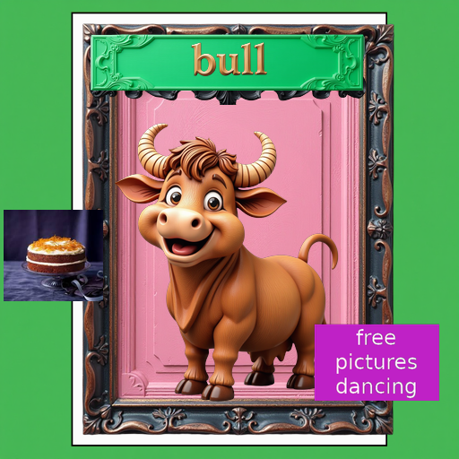
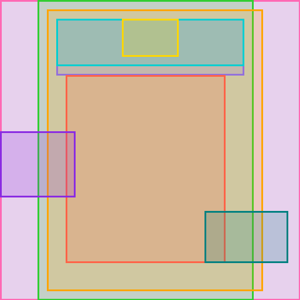
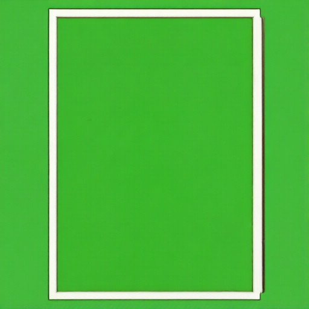
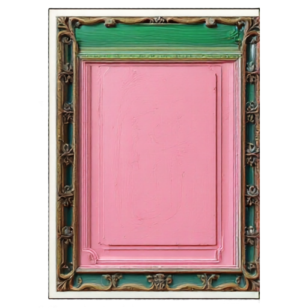
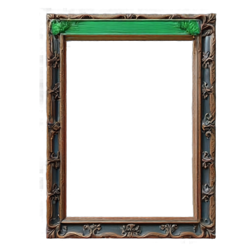
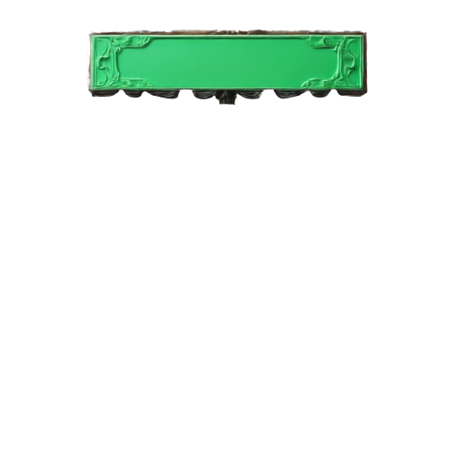
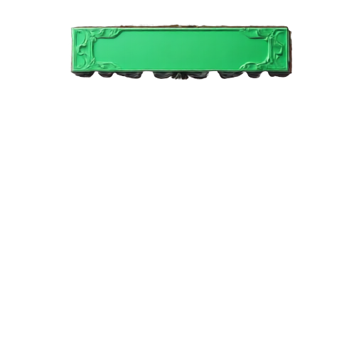
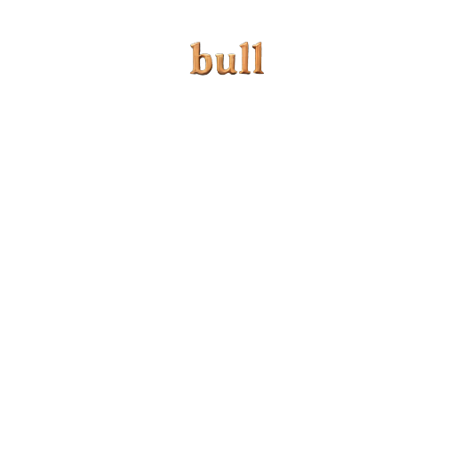
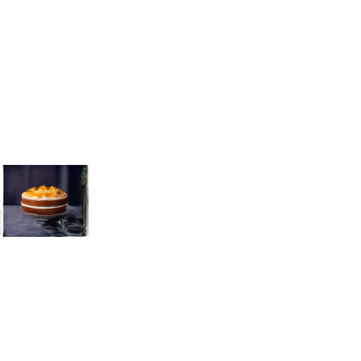
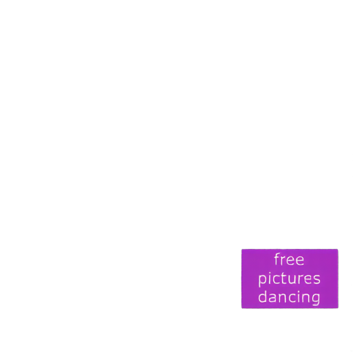
Recent image generation models produce high-quality visuals, but their outputs are flattened images that entangle foreground objects, background, and text. This makes flexible post-generation editing difficult. Existing layered-design approaches rely on scarce proprietary assets or partially synthetic data with limited structural priors, leaving scalability as a central bottleneck.
We investigate whether purely synthetic layered data can improve graphic design decomposition. Building on the CLD baseline, we construct SynLayers, generate textual supervision with vision-language models, and automate inference inputs with VLM-predicted bounding boxes. Our study shows that purely synthetic data can outperform PrismLayersPro at the same 18K scale, that gains stabilize around medium data scales, and that synthetic data gives better control over layer-count distributions.
Synthetic data works
At the matched 18K setting, SynLayers improves layer PSNR from 26.22 to 27.23 and composite PSNR from 30.52 to 31.35 over the PrismLayersPro-trained CLD baseline.
Medium scale is enough
Performance does not increase monotonically with more data. Layer FID is best at 20K, while composite FID is best at 30K, with gains saturating around moderate scales.
Layer-count balance helps
Because layer counts are controllable during synthesis, SynLayers improves robustness across different design complexities, especially high-layer-count cases.
SynLayers recombines multi-source assets, including base designs, RGBA/RGB foreground objects, rendered text, and backgrounds. A low-overlap placement strategy generates composite images, ground-truth RGBA layers, bounding boxes, and raw spatial descriptions. A VLM then refines grid-based captions into coherent whole-image supervision.
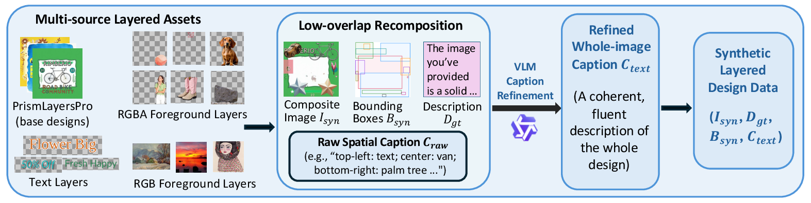
Compared with Qwen-Image-Layered and the original PrismLayersPro-trained CLD baseline, the SynLayers-trained model produces cleaner semantic separations, sharper typography, and more accurate object boundaries. The real-world comparison also uses the trained Qwen3-VL detector to predict captions and layer boxes automatically from each raster image.
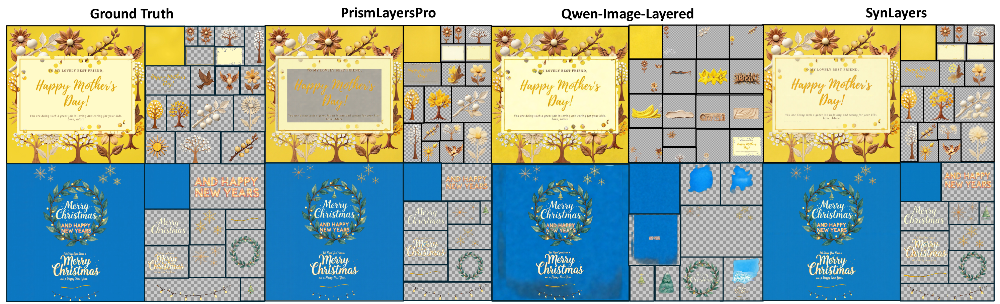

| Training set | # Samples | Layer PSNR ↑ | Layer SSIM ↑ | Layer FID ↓ | Mask IoU ↑ | Mask F1 ↑ | Composite PSNR ↑ | Composite SSIM ↑ | Composite FID ↓ |
|---|---|---|---|---|---|---|---|---|---|
| PrismLayersPro | 18K | 26.22 | 0.865 | 6.62 | 0.910 | 0.948 | 30.52 | 0.944 | 12.50 |
| SynLayers | 18K | 27.23 | 0.879 | 6.18 | 0.919 | 0.954 | 31.35 | 0.950 | 13.21 |
| SynLayers | 20K | 27.16 | 0.880 | 5.97 | 0.919 | 0.953 | 30.82 | 0.948 | 12.00 |
| SynLayers | 30K | 26.60 | 0.873 | 6.30 | 0.912 | 0.949 | 30.30 | 0.947 | 10.35 |
| SynLayers | 50K | 26.82 | 0.875 | 6.23 | 0.920 | 0.954 | 30.29 | 0.949 | 10.93 |
| SynLayers | 500K | 26.75 | 0.873 | 6.12 | 0.916 | 0.953 | 30.89 | 0.947 | 12.45 |
Best CLD-based checkpoint
27.16 / 0.880 / 5.97
Layer PSNR / SSIM / FID for SynLayers 20K.
OOD real-world test
29.35 PSNR, 35.40 FID
Composite-only evaluation on 147 real images.
Detector-caption quality
80.77 / 100
GPT-4.1 judged whole-caption score on 200 samples.
Browse the predicted background and foreground RGBA layers from bottom to top. Each example starts from a raster image and predicted bounding boxes.










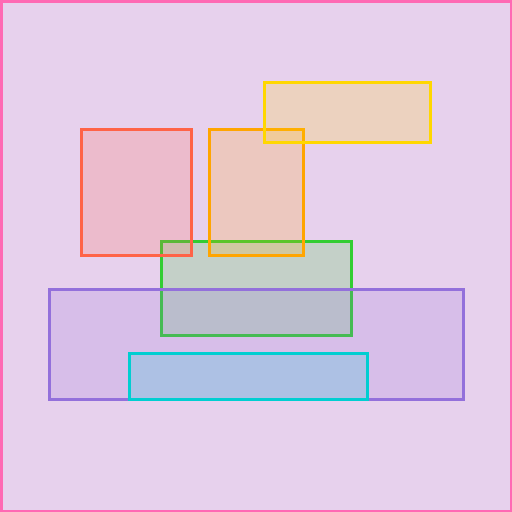
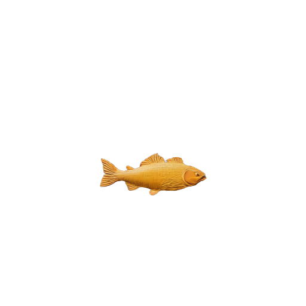
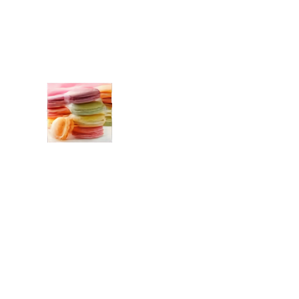
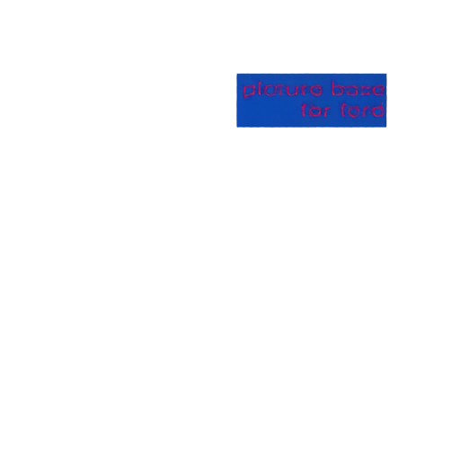
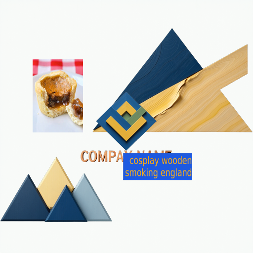
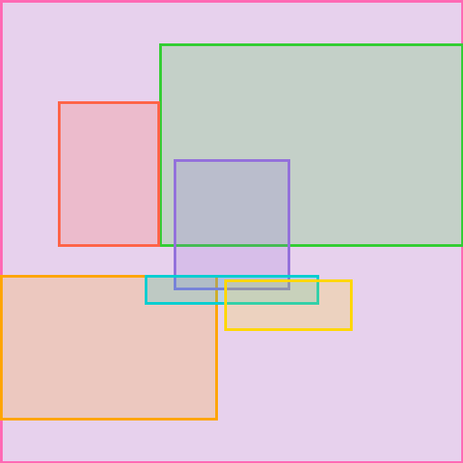
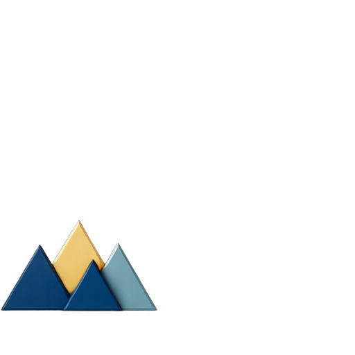
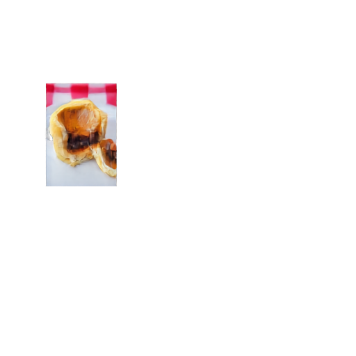
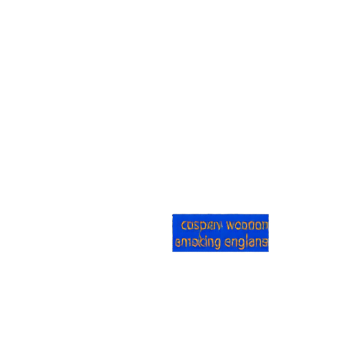
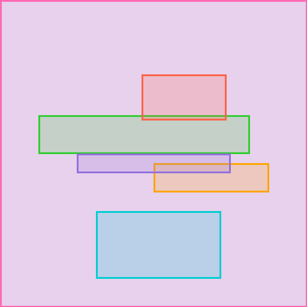
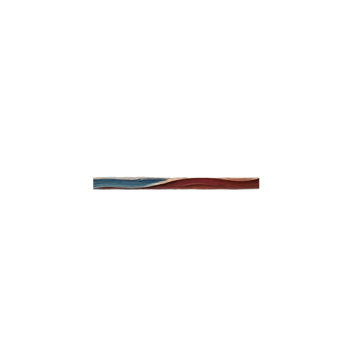
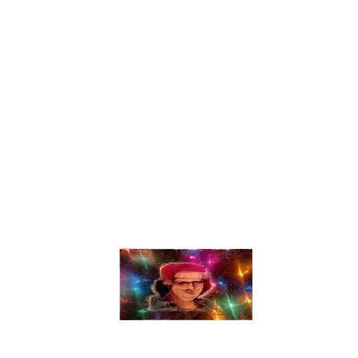